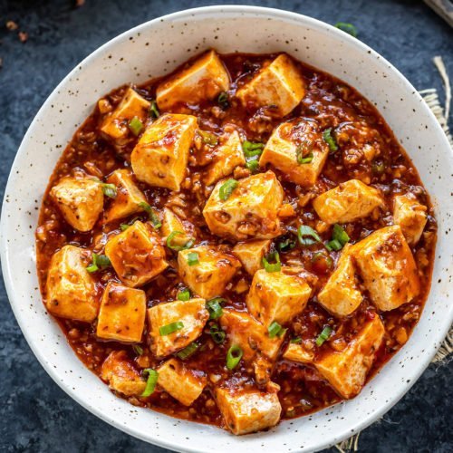

Mapo Tofu

Description
This is a short and simple recipe. This is an authentic
Sichuan-style mapo tofu, both spicy and aromatic.
Ingredients
- 1/2 cup vegetable broth
- 1 tablespoon maple syrup
- 2 teaspoons reduced-sodium soy sauce
- 1 teaspoon cornstarch
- 1 tablespoon peanut oil
- 1 cup shiitake mushrooms, sliced
- 3 tablespoons fermented black beans, roughly chopped
- 2 green onions, white parts only, chopped
- 6 cloves garlic, minced
- 1 tablespoon fresh ginger, minced
- 1 teaspoon Sichuan peppercorns
- 2 tablespoons chili bean paste (doubanjiang)
- 1 container silken tofu, cut into 1-inch cubes
- 1 tablespoon chile oil
- 1 tablespoon sesame oil
- 3 tablespoons peanuts, chopped
Steps
- Mix vegetable broth, maple syrup, soy sauce, and cornstarch in a bowl.
- Heat peanut oil in a wok over medium-high heat. Add mushrooms, black
beans, green onions, garlic, ginger, and Sichuan peppercorns. Saute until aromatic, about 1 minute. Add chili bean paste and the soy sauce mixture. Cook and stir until thick, 3 to 5 minutes, Add tofu; cook until heathed through, about 1 minute more.
- Transfer cooked tofu to a serving dish; drizzle chile oil and sesame oil on top. Top with chopped peanuts.